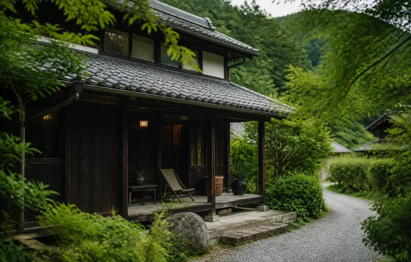
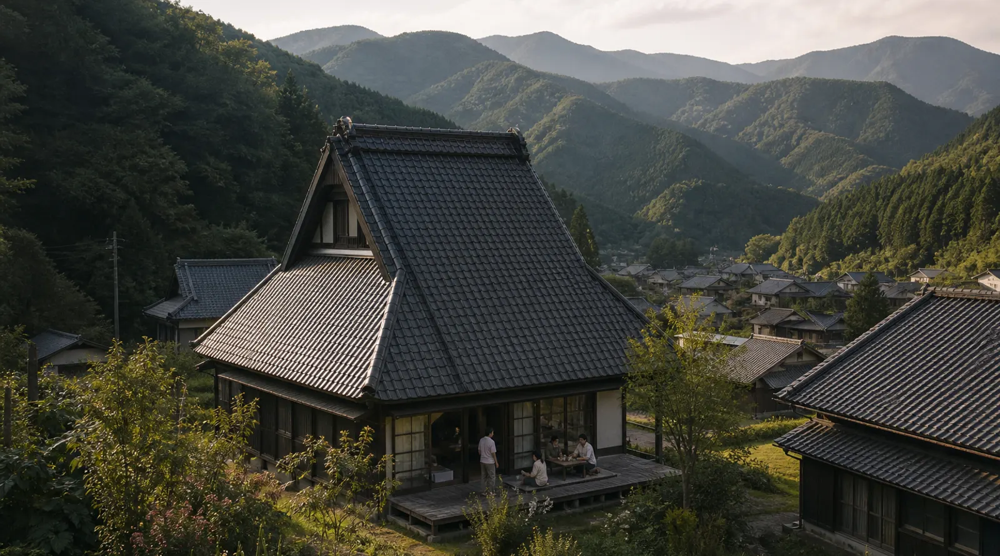
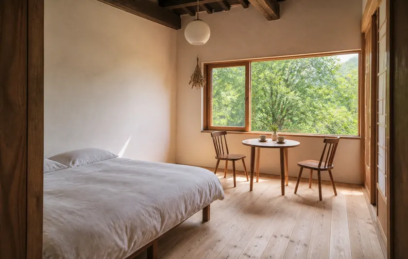

蕗原の家
熾から歩いて3分。土間に囲炉裏のある平屋を、一棟まるごとお貸しします。庭で焚き火ができて、朝は霧の棚田が窓から見えます。台所の道具はひととおりそろっています。
| 熾から | 徒歩3分 |
|---|---|
| お部屋 | 和室2間・土間（囲炉裏）・台所・浴室 |
| 定員 | 2〜6名 |
| お食事 | 素泊まり（夕食に囲炉裏メシを追加できます） |
| 時間 | チェックイン 15:00／チェックアウト 10:00 |
| 料金の目安 | 1棟 ¥32,000〜（4名まで。5名からは1名ごとに ¥6,000） |

どちらの宿も、熾の貸切枠と合わせて熾でまとめてご予約を承ります。宿の料金は、それぞれの宿でお支払いください。

熾から歩いて3分。土間に囲炉裏のある平屋を、一棟まるごとお貸しします。庭で焚き火ができて、朝は霧の棚田が窓から見えます。台所の道具はひととおりそろっています。
| 熾から | 徒歩3分 |
|---|---|
| お部屋 | 和室2間・土間（囲炉裏）・台所・浴室 |
| 定員 | 2〜6名 |
| お食事 | 素泊まり（夕食に囲炉裏メシを追加できます） |
| 時間 | チェックイン 15:00／チェックアウト 10:00 |
| 料金の目安 | 1棟 ¥32,000〜（4名まで。5名からは1名ごとに ¥6,000） |

熾から車で12分。客室4つの小さな宿です。お泊まりの方は、宿と熾のあいだを送り迎えします。夕食は宿の料理のほか、熾の囲炉裏メシに替えることもできます。
| 熾から | 車で12分（送り迎えあり） |
|---|---|
| お部屋 | 洋室4室（ベッド2台・うち2室は3名まで） |
| 定員 | 1室 1〜3名 |
| お食事 | 1泊2食つき |
| 時間 | チェックイン 15:00／チェックアウト 10:30 |
| 料金の目安 | お一人 ¥19,800〜（2名1室） |
二の枠に、蕗原の家での一泊を合わせた例です。
ご希望の宿と、熾の枠をお書きください。宿が決まっていなくてもかまいません。
熾から宿に問い合わせて、2日以内にメールでご連絡します。
宿のキャンセル規定は、それぞれの宿のものになります。確定のメールでお知らせします。